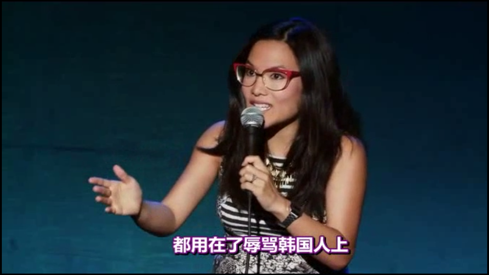

半夜了，才想起白天有个重要的电话没回。最近状态差，能意识到自己逃避去想更难更重要的事情，而每天让一堆貌似紧迫的事情占满时间，看着还挺忙忙碌碌。 做决策以及承担与之对应的责任，才是最耗精力的事情。大概还是元气不足的缘故，得想办法补充补充。
看完了，没觉得有太多的政治不正确，都是大实话。比如Ali说自己就是想lie down, 找个人养自己，也是一种选择啊，虽然不对我的胃口。至于很黄的评论，我倒觉得只是科普罢了，难道很多人不知道前列腺高潮这回事？@老Fin:喜欢一切政治不正确的东西。Ali Wong.Baby Cobra 【盖柴】Ali Wong.Baby Cobra 
周末尝试追了下《权力的游戏》第六季，发现看不下去了，受不了那些血肉模糊的镜头。更糟糕的发现是，现在基本也没耐性去完整地看完一部长达两三个小时的电影。--- 以前彻夜看光碟的兴趣和热情，可能再也找回不来了。
任天堂游戏又一次引爆全球，这事儿只是验证了那个真理：曾经的牛人或者牛逼公司，再次出好产品的概率，要比新人大得多。 #创业# 也是个赌概率的事情。因为90后神奇百货的闹剧，发现其投资人朱波是我关注的人，立刻取消，真心不靠谱。即使天使投资是个押大小赔率更高的事情，也不是这么撒钱玩儿的。
持续输出，是保证有量。但有适合的人，才能有质。质在量前。@Ada李力:#创业#一直有做直播的想法，解答问题，以及使用护肤品方法及步骤的小视频。但保持持续的输出，是一件艰苦的事情。而更难的是，得有适合做直播的人。
我曾随便浏览了几期，内容都很平庸，类似公交车和地铁播放的导购节目。这么平庸的节目通常是超牛流量平台的配菜，放优酷这种竞争激烈的地方就很难有作用。//@Ada李力:曾经无意中在优酷上看到个北京吃喝玩乐的栏目，拍了几十期，每期只有寥寥几十个点击，看起来做了一年就停掉了。@Ada李力:#创业#想做一个医美科普短视频栏目，发现跟别人描述这个栏目是什么样有些困难，于是去找印象中比较符合的一些短视频。找东西真费时间，以前浏览信息没有搜集分类的习惯，那就得依赖搜索能力，这方面还需提高。以后图片视频类的东西，看到印象深刻的，一定得Mark。
忙碌未必是好事，有时候忙碌只是为了掩盖焦虑。@Ada李力:半夜了，才想起白天有个重要的电话没回。最近状态差，能意识到自己逃避去想更难更重要的事情，而每天让一堆貌似紧迫的事情占满时间，看着还挺忙忙碌碌。 做决策以及承担与之对应的责任，才是最耗精力的事情。大概还是元气不足的缘故，得想办法补充补充。
经常会接到推销电话，有时对方也是#创业#公司，在跟对方沟通过程中，心里不断感叹：“只是千八块钱的业务，对方真是耐心。相比之下，目前自己的客服做得太粗糙”。另一方面，又有些庆幸，对方这么苦巴巴地做客服，明显从事的是个苦逼行业呀。
回复@彭运平_医美: //@彭运平_医美:整形医院一般4.5万/月@Ada李力:是否是苦逼行业，主要看人均产值。昨天看到一组数据，医美诊所的人均是3.5万，好些的能达到6万，牛逼的能到30万（北京CBD），我怀疑这是按月算的。如此来说，也只有互联网大公司的人均产值可与之媲美了。